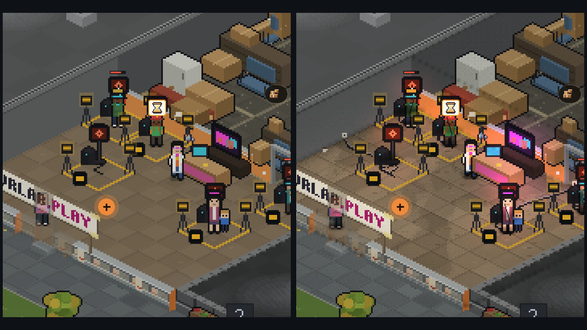
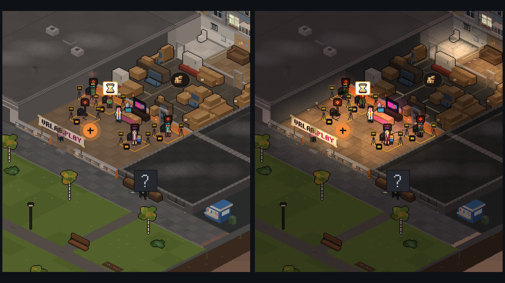

Вчерашний девлог был про новое название и сборку 28. Браузерная сборка на itch.io с тех пор ушла вперёд: сейчас там версия 0.1.35. Вот что изменилось и почему.
Ошибки из прошлого раза
Прошлый девлог заканчивался тремя ошибками из первых замечаний к сборке 28. Все три исправлены. Касание по пустому полу теперь выбирает комнату, у комнат есть свой значок прямо в мире и отдельная страница «Комнаты». Аптека, объединённая с залом, теряет стену между ними. Широкая раскладка ставит панели сбоку во всю высоту, а не сплющивает их.
Предел, который растёт вместе с лабораторией
В сборке 28 был жёсткий потолок: 18 станций во Владивостоке, 22 в Сан-Франциско, сколько бы у вас ни было комнат. Мы предлагали смягчить его: пусть каждая станция после девятой приносит чуть меньше. Это предложение не прошло. Теперь предел растёт с комнатами, где играют: обычная комната добавляет 5 станций, каждый из двух залов — 6, бывшая аптека — 12, так что лаборатория растёт с 12 до 17 и до 29. Станции побольше занимают больше места, так что дальше всё решает площадь.
Шесть видов станций
До сих пор все станции были одинаковыми стойками. Теперь видов шесть, и у каждого своя цена, свои гости, свои игры, своя нагрузка на персонал и свои уровни улучшения:
- Стоячая — та самая стойка, которую вы уже знаете.
- Комнатная — площадка три на три клетки, по которой можно ходить.
- Сидячая — за столом.
- Гоночный стенд: руль, прикрученный к столу, потом кресло на раме, потом подвижная платформа.
- Лётный стенд: джойстик, потом кабина, потом кресло, которое двигается по нескольким осям.
- Беговая дорожка: скользкая чаша со страховкой, потом ленточная дорожка, а ближе к концу игры — полный беговой стенд.
Вместе с ними пришли шестнадцать новых игр, привязанных к своим видам: гонке нужен стенд. Комбо теперь 28, и они собираются в книгу комбо на вкладке «Игры». Одни — про предметы: вентилятор, который дует гонщику в лицо, стенд рядом с большим экраном, чтобы прохожие останавливались посмотреть, запчасти на полке у стендов. Другие — про игры рядом: два гоночных стенда — это гонка, четыре — стартовая решётка, два шутера — дуэль. Пара засчитывается, только если игры разные, так что пёстрое расписание выгоднее одной и той же игры на весь зал.
Погода, дни недели и отключение света
Сколько придёт гостей, теперь считается одной видимой суммой: день недели, погода, известность, репутация, вывеска, реклама, цены, насколько подходят игры, конкуренты и то, что сейчас происходит. На странице «Посетители» видна каждая часть. В будни тише, с пятницы по воскресенье людно. Дождь и снег загоняют людей внутрь, а в жару зал пустеет.
События теперь разыгрываются у вас на глазах. В грозу может пропасть свет: лампы мигают и гаснут, светятся только таблички «Выход», гости выходят и ждут на тротуаре. В четырёх случаях из десяти свет возвращается минут через пять, и они расходятся обратно по своим станциям. Иначе двери закрыты на час-три.
Зал, в котором видно, что тут работают
Пиксельную графику в этой игре рисует код, и до этой сборки он рисовал всё чистым: каждая плитка новая, каждая стена освещена одинаково, как картинка магазина, который ещё никто не открывал. Настоящая лаборатория в 2016 году была первым этажом панельного дома: затёртый линолеум, повсюду провода, коробки по углам.
Поэтому зал прошёл через свет и износ: тёплый свет внутри и тёмная улица вокруг в сумерках, полы и стены, по которым видно возраст, провода от станций, мелкий беспорядок там, где работают люди. Ниже одни и те же кадры до и после. Если телефону тяжело, настройка «Свет» делает его проще или выключает.



Что дальше
Строится сейчас, в браузерной сборке этого пока нет: рабочий день. Гости подходят к стойке, регистрируются и платят, играют, оставляют отзыв за столиком у двери и уходят домой. Перед закрытием — последний заход, персонал убирается и гасит свет, а утром пара сотрудников уже болтает у входа, пока двери не открыли. И люди становятся крупнее и подробнее.
Если в новой сборке что-то не так, напишите: contact@goldenharbourgames.com или в комментариях на itch.